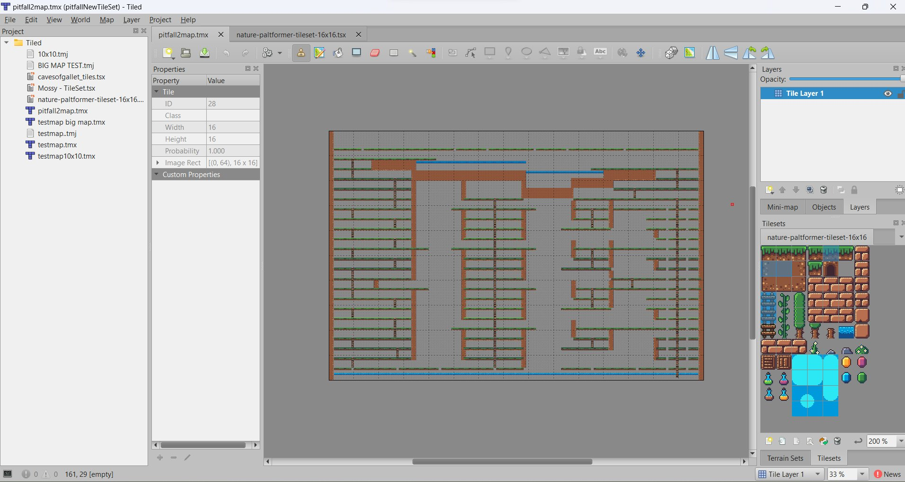
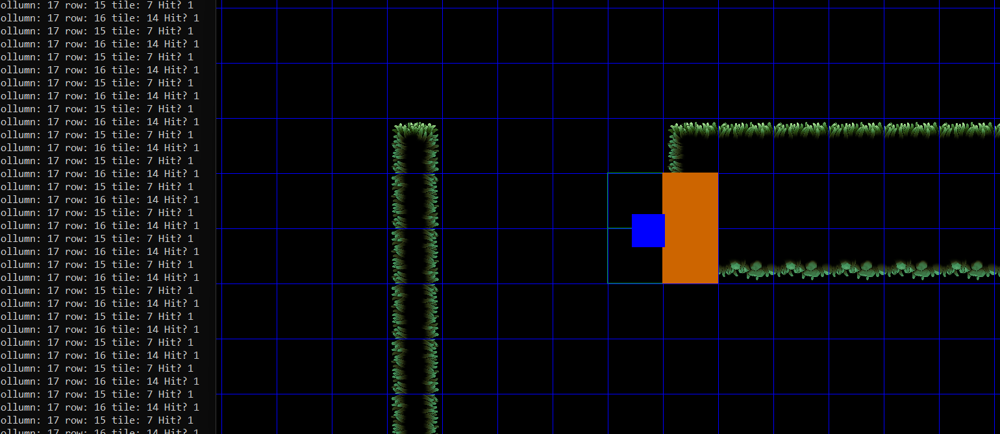
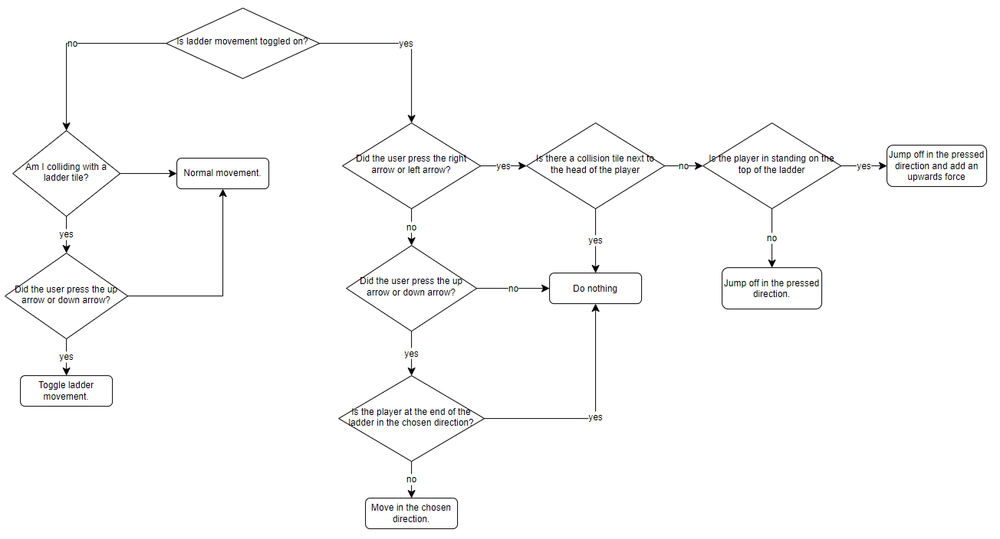

HoleDown is my recreation of Pitfall II, and my first big C++ project at BUas. It has a full scrolling level built in Tiled, my own tile renderer and collision, and swinging ropes simulated with verlet physics.
Level · Tile maps

HoleDown was my first project at BUas: a recreation of Pitfall II, written in C++ on the school's 2D template in eight weeks.
I rebuilt the whole Pitfall II map in Tiled and exported it as CSV, which my game reads and turns into tile data.
The renderer copies each tile's pixels from the tileset straight into the screen buffer, in world coordinates, so a camera can scroll over a map of any size.
Tiled also places everything else. A second layer marks where ropes, pits, enemies, coins and checkpoints go,
and the game spawns the right object for each marker when the level loads. That made it quick to build the level and change it later.
My intake game had shaky collision, so this time I researched how it is usually done first. The player is tested with AABB collision against only the four tiles it could overlap, and the check runs on the position the player is about to move to, so the player is stopped before it ends up inside a tile. A debug view showed which tiles were being checked and which one was hit.

The parallax background was my first time using a profiler. Copying its pixels one by one turned out to be very slow, so I switched to copying whole blocks of pixels at once with memcpy, which improved the frame rate a lot. memcpy can't skip transparent pixels, so I filled the transparent parts of each layer with the colour of the layer behind it. It isn't perfect, but the effect still holds up.
Physics · Verlet
A lecture on verlet physics got me hooked, so I used it for Pitfall's swinging ropes.
The rope is a chain of points that each remember where they were last frame. Every update a point keeps moving by the difference between
its current and previous position and gets pulled down by gravity. Then a few passes pull every pair of neighbouring points
back to a fixed distance from each other, with the top point anchored in place.
In Pitfall the ropes never stop swinging, so the rope checks when it reaches the end of a swing and gives itself a small push if the swing has become shorter.
The player grabs the end of the rope when they get close, and the camera zooms out while swinging to show where you are going to land.
for (int j = 0; j < mNUMITERATIONS; j++) {
for (int i = 0; i < mROPEPARTS - 1; i++) {
float2 lineCentre = (mpRopePoints[i + 1]->position + mpRopePoints[i]->position) / 2;
float2 lineDirection = normalize(mpRopePoints[i + 1]->position - mpRopePoints[i]->position);
if (!mpRopePoints[i]->anchored) mpRopePoints[i]->position = lineCentre - (lineDirection * (mMAXDIST / 2));
if (!mpRopePoints[i + 1]->anchored) mpRopePoints[i + 1]->position = lineCentre + (lineDirection * (mMAXDIST / 2));
}
}Rope::simulate() — Rope.cpp (shortened)
Gameplay

The player switches between walking, climbing, swimming, swinging and floating on a balloon, and every mode has its own movement code.
I planned the switches between them in a diagram first: every state leads back to walking, and walking leads to all the others.
The character sprite came from an online asset pack, and I drew my own swimming and swinging animations for it.
One pit class covers four kinds of pit, from a plain hole to water full of crocodiles. The bats, frogs, eels, scorpions and boulders
all share one enemy base class, and once that existed, each new enemy only took a short time to add.
Coins, checkpoints, a score, and menus with settings complete the game.
Reflection
The faulty collision in my intake game came from building it my own way without checking how others do it. This time I read up on AABB collision first, and had a solid system working in a day.
This was my first big C++ project, and it shows in the code. Feedback from a lecturer on inheritance, statics and the SOLID principles changed how I set up classes, and the enemy base class showed me how much time a good structure saves.
The verlet rope was the most fun part, but it also took much longer than planned. The lesson I took from it: get the core of a game finished before diving into the feature I'm most excited about.